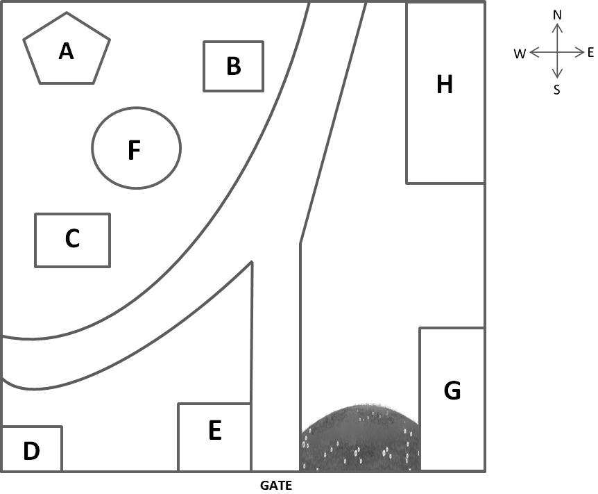

Good morning everybody and welcome to the Australian Wild Zoo. I would like to start by introducing you to the new features that we have added to our zoo in the recent renovation. Being the only zoo in the area, we receive thousands of visitors a year. We found that this huge footfall was too demanding for the facilities that we were able to provide, and so we decided to expand ourselves in order to give every visitor a brilliant and exciting experience. We initially intended to build a new dog-walking area, however we felt that the zoo should cater only to exotic animals. During our previous renovation we expanded the exhibition centre and so we felt that this time the zoo would benefit most from introducing a new batch of animals (Q11), so visitors can now see a whole range of new additions at the Australian Wild Zoo, including lions and bears.
With this huge improvement to our facilities, we also found it necessary to change our regulations, which we put into action in June. We now allow visitors access to the zoo during weekdays and, as some of our newly added animals are nocturnal, guests may also now visit the animals late at night (Q12). Unfortunately some visitors had started feeding the animals during these late night viewing times, which disrupted their feeding pattern and as a result we had to ban food in the viewing areas.
One of our most exciting additions to the zoo is our native kangaroo, who we have named Frisbee. For a fee of just $5, visitors can have their photo taken with him and have it printed onto a selection of items such as key rings and mugs. At first, visitors were also allowed to feed Frisbee items that we provided, such as carrots and leaves, however some guests started feeding him hamburgers and chips so we were forced to forbid visitors from feeding him (Q13). As kangaroos are such calm animals, Frisbee isn’t disturbed by the noises and shouting of visitors at the zoo, which has helped him to settle in at his new home very quickly.
The pye-dog zone has been permanently closed throughout the winter period to allow the dogs to hibernate as they would in their natural habitat. We were very excited to be reopening the zone, however unfortunately we have been forced to close it temporarily as the result of a broken fence (Q14), which will take about one week to fix. We were intending to renovate the zone with the other constructions that we were undertaking, but unfortunately we did not have sufficient funds. We understand that this temporary closure may disappoint our visitors, and so we have decided to offer a discounted price on our tickets for the next week. If you ask at the reception desk, they will happily direct you to the photo shop where you can purchase the ticket (Q15). The ticket will also entitle you to a 10% discount off any item in our gift shop where we sell a range of items including postcards and fluffy toys.

Now we’re currently standing at the gate, which is marked with the arrow on the map. Now if any of you need to visit the toilets before we get started, they’re right here to our left. Out to the east, just across the grass, there is the bird hide (Q16) where we have over one hundred species of birds for you to watch. We even have an interactive zone where you can feed them with seed and take photographs with our parrots! What a great souvenir to remember your trip! And up the path to the north, if you look in front of you now, there is the pye-dog zone (Q17). Although it is closed, if any of the dogs are playing outside, you will be able to see them through the fence. And then let’s pass by the refuge. This area is a sheltered part for Brolga watchers who can use it to spy through binoculars.
And after that, I suggest that you all visit the rest area for some cold drinks and snacks as it is very hot outside. It is just at the northwest corner of the zoo (Q18). After that you could cut across the path to the large rectangular hut where you will be able to see our new addition of fierce lions. The mother has just had cubs, so it is really quite a rare thing to see! And around to the west, for those of you who want to visit Frisbee, our native kangaroo, he is in the circular shaped hut just up the path to the left (Q19). Don’t forget to have your photo taken with him! Now, as I mentioned before, you can purchase your discounted tickets at the photo shop and this is also where you will come to collect any photos you have had taken at the zoo during your visit. The photo shop is located at the southwest corner of the zoo. (Q20)
Okay, ladies and gentlemen, enjoy your visit.